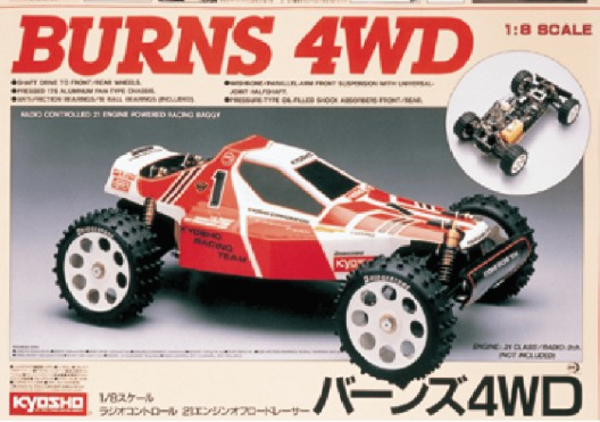

京商 バーンズ4WD

引用元画像：京商カタログ
📋 基本情報
| メーカー | 京商（Kyosho） |
|---|---|
| 機種名 | バーンズ4WD（Burns 4WD） |
| シャーシ略称 | バーンズ4WD |
| 型番 | 3096 / MP1 |
| 発売時期 | 1987年～1992年 |
| 価格 | 当時価格：約$580～$710（DX 4WD、エンジンにより異なる） |
| 生産状況 | 生産終了 |
| カテゴリー | ラジコンカー（1/8スケール エンジンRCカー） |
| サブカテゴリー | GPレーシングバギー（4WD オフロード） |
| シリーズ | バーンズシリーズ（MP1） |
📏 シャーシスペック
| スケール | 1/8 |
|---|---|
| 駆動方式 | シャフトドライブ・3デフ4輪駆動システム |
| フレーム | 高剛性ジュラルミン製フラットパンシャーシ |
| サスペンション | 超ロングスパン・ダブルウィッシュボーン4輪独立懸架 ※優れた路面追従性 |
| ダンパー | 大容量ビッグプレッシャーダンパー×4基 |
| ベアリング | 高精度ベアリング18個装備（フルベアリング） |
⚙️ 駆動系
| 駆動方式 | シャフトドライブ4WD |
|---|---|
| デフギヤ | 3デフシステム（フロント・センター・リア） |
| ギヤボックス | 工場組立て済ギヤボックス採用 |
| センターデフ | 工場組立て済センターデフ採用 |
| エンジン | 21クラスエンジン（別売） ※OS RF-B、OS EX-B等が使用可能 |
| マフラー | 標準付属 |
| マニホールド | 標準付属 |
📡 プロポ・電装系
| プロポ | 2チャンネルプロポ（別売） |
|---|---|
| サーボ | ステアリング用サーボ（別売） |
💡 特徴
1/8オフロード市場への参入
- 京商がVanning、Landjump、Prestoに続いて投入した1/8スケールGPバギー
- 従来の金属製複雑構造から、アップグレード可能なシンプル設計へ転換
- エントリーレベルでも優れた性能を発揮する堅牢なプラットフォーム
- 幅広い価格帯で5つの仕様をリリース（2WD、4WD、DX、Turbo Burns等）
堅牢で拡張性の高い設計
- 高剛性ジュラルミン製フラットパンシャーシで耐久性確保
- フルベアリング仕様（18個）で駆動ロスを最小化
- 工場組立て済ギヤボックスとセンターデフで初心者にも組み立てやすい
- Duratraxなどサードパーティからのアップグレードパーツも豊富
- USA-1 Nitro Crusherモンスタートラックにもプラットフォーム流用
超ロングスパン・サスペンション
- ダブルウィッシュボーン4輪独立懸架で優れた路面追従性
- 大容量ビッグプレッシャーダンパー×4基で安定した走行
- ロングスパン設計により激しいオフロードでも安定性を確保
カスタマイズ性
- エントリーレベルのBurns DX 2WDからTurbo Burns仕様へアップグレード可能
- BSシリーズ標準パーツ、BSWシリーズオプションパーツで段階的にカスタマイズ
- ギヤ、ブレーキディスク、アルミマウント、ウィッシュボーン、剛性シャーシプレート等
- Duratraxをはじめとするサードパーティ製パーツも充実
バーンズシリーズの系譜
- Burns 4WD（MP1、1987-1988年、最も希少で価値が高い初期モデル）
- Burns DX 4WD（中間レベル、OS RF-B標準エンジン、約$580）
- Burns DX 2WD（エントリーレベル、センターデフ省略）
- Turbo Burns（MP2、ハイエンドモデル、当時は手が届きにくかった最高峰）
🏆 歴史的背景
Burns（MP1）の位置づけ
- 1987～1992年の5年間にわたり販売された歴史的モデル
- 京商の1/8 GPバギー市場への本格参入を象徴する機種
- 幅広い価格帯で展開し、多くの若いホビイストにRCの門戸を開いた
- 初代Burns（1987-1988年）は希少性から現在コレクターズアイテムとして高値
Infernoシリーズへの継承
- 京商デザイナー・金井裕一氏がTurbo Burnsから関与
- 多くのパーツと設計思想が後のInfernoシリーズ（1991～1996年）に継承
- Infernoは生産期間中すべてのIFMAR世界選手権を制覇
- Burnsプラットフォームの堅牢性と拡張性がInfernoの成功を支えた
コレクターズアイテムとしての現在
- オリジナルボックス・説明書付きの良好状態品は高値で取引
- 特に初期モデル（1987-1988年）は希少性から人気
- Turbo Burnsは当時手が届かなかったホビイストに今も人気
- 専用フォーラムやコミュニティが多数存在し、詳細なレストア情報が共有されている
🔧 ぽすとそに工房での修理実績
修理難易度
★★★★★（非常に難しい）
パーツがほぼ見当たらなく、レストアとしても難しい状態です。情報も公式と有志の方が少し載せているのみでほぼないのが現状です。
よくある故障・注意点
- パーツ入手困難：BSシリーズ・BSWシリーズパーツの大半が絶版
- eBayなどで稀に見つかる程度で、価格も高騰
- エンジン系パーツ（マフラー、マニホールド）も入手困難
- ジュラルミンシャーシの経年劣化による強度低下
- ビッグプレッシャーダンパーのオイル漏れ・シール劣化
- ギヤボックス内部のグリス硬化
修理のポイント
- パーツは事前に複数確保することが必須
- 3Dプリンタでの部品自作も視野に入れる
- ベアリングは現行サイズから互換品を探す
- ダンパーオイルとシールは汎用品で代用可能
- ギヤボックスの分解清掃・グリスアップは慎重に
- エンジンはOS製21クラスの現行品が使用可能
- 海外RCコミュニティ・フォーラムで情報収集が重要
その他の特徴
- 歴史的価値が高く、保存状態の良い個体は貴重
- レストアには相当な知識と技術、時間が必要
- 完全レストアではなく「動態保存」を目指すのが現実的
- Infernoシリーズとの共通パーツも一部存在
- 専用コミュニティでの情報交換が不可欠